非遗图鉴 / 天工造物
08
非遗图鉴 · 传统技艺
天工造物
传统技艺 · 287 项、629 子项 · 第 1 / 5 页（Ⅷ-1 至 Ⅷ-60）
每一条只列名录上的事实：编号、名称、申报地区或单位、公布年份和批次。详情看中国非物质文化遗产网的官方页。在名录检索里查这一门类 →
- Ⅷ-1
宜兴紫砂陶制作技艺
- 江苏省宜兴市2006 第一批 · 新增项目官方页 →
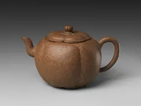
清宜兴紫砂茶壶，大都会艺术博物馆藏图：大都会艺术博物馆（The Metropolitan Museum of Art） / Public Domain (Open Access, CC0) / 大都会艺术博物馆。本站已缩放裁切。 - Ⅷ-2
界首彩陶烧制技艺
- 安徽省界首市2006 第一批 · 新增项目官方页 →
- Ⅷ-3
石湾陶塑技艺
- 广东省佛山市2006 第一批 · 新增项目官方页 →
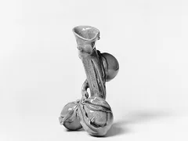
清石湾窑瓶，大都会艺术博物馆藏图：大都会艺术博物馆（The Metropolitan Museum of Art） / Public Domain (Open Access, CC0) / 大都会艺术博物馆。本站已缩放裁切。 - Ⅷ-4
黎族原始制陶技艺
- 海南省昌江黎族自治县2006 第一批 · 新增项目官方页 →
- Ⅷ-5
傣族慢轮制陶技艺
- 云南省西双版纳傣族自治州2006 第一批 · 新增项目官方页 →
- Ⅷ-6
- Ⅷ-7
景德镇手工制瓷技艺
- 江西省景德镇市2006 第一批 · 新增项目官方页 →
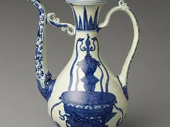
明景德镇窑执壶，大都会艺术博物馆藏图：大都会艺术博物馆（The Metropolitan Museum of Art） / Public Domain (Open Access, CC0) / 大都会艺术博物馆。本站已缩放裁切。 - Ⅷ-8
耀州窑陶瓷烧制技艺
- 陕西省铜川市2006 第一批 · 新增项目官方页 →
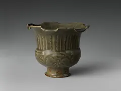
北宋耀州窑罐，大都会艺术博物馆藏图：大都会艺术博物馆（The Metropolitan Museum of Art） / Public Domain (Open Access, CC0) / 大都会艺术博物馆。本站已缩放裁切。 - Ⅷ-9
龙泉青瓷烧制技艺
- 浙江省龙泉市2006 第一批 · 新增项目官方页 →
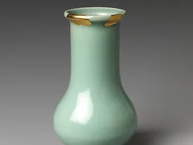
南宋龙泉窑青瓷，大都会艺术博物馆藏图：大都会艺术博物馆（The Metropolitan Museum of Art） / Public Domain (Open Access, CC0) / 大都会艺术博物馆。本站已缩放裁切。 - Ⅷ-10
磁州窑烧制技艺
- 河北省峰峰矿区2006 第一批 · 新增项目官方页 →
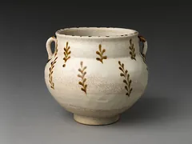
北宋磁州窑罐，大都会艺术博物馆藏图：大都会艺术博物馆（The Metropolitan Museum of Art） / Public Domain (Open Access, CC0) / 大都会艺术博物馆。本站已缩放裁切。 - Ⅷ-11
德化瓷烧制技艺
- 福建省德化县2006 第一批 · 新增项目官方页 →
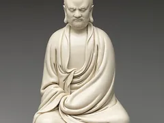
明德化窑白瓷塑像，大都会艺术博物馆藏图：大都会艺术博物馆（The Metropolitan Museum of Art） / Public Domain (Open Access, CC0) / 大都会艺术博物馆。本站已缩放裁切。 - Ⅷ-12
澄城尧头陶瓷烧制技艺
- 陕西省澄城县2006 第一批 · 新增项目官方页 →
- Ⅷ-13
- Ⅷ-14
宋锦织造技艺
- 江苏省苏州市2006 第一批 · 新增项目官方页 →
- Ⅷ-15
苏州缂丝织造技艺
- 江苏省苏州市2006 第一批 · 新增项目官方页 →
- Ⅷ-16
蜀锦织造技艺
- 四川省成都市2006 第一批 · 新增项目官方页 →
- Ⅷ-17
乌泥泾手工棉纺织技艺
- 上海市徐汇区2006 第一批 · 新增项目官方页 →
- Ⅷ-18
土家族织锦技艺
- 湖南省湘西土家族苗族自治州2006 第一批 · 新增项目官方页 →
- Ⅷ-19
- Ⅷ-20
壮族织锦技艺
- 广西壮族自治区靖西县2006 第一批 · 新增项目官方页 →
- Ⅷ-21
- Ⅷ-22
加牙藏族织毯技艺
- 青海省湟中县2006 第一批 · 新增项目官方页 →
- Ⅷ-23
- Ⅷ-24
南通蓝印花布印染技艺
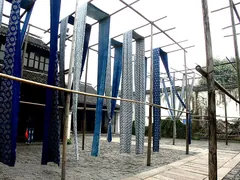
乌镇蓝印花布图：Gisling / CC BY-SA 3.0 / 维基共享资源。本站已缩放裁切，按 CC BY-SA 3.0 同样许可共享。 - Ⅷ-25
蜡染技艺
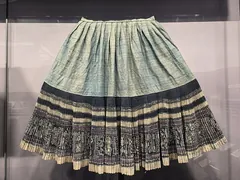
Batik pleated skirt in the Sichuan University Museum图：Yumeto / CC BY-SA 4.0 / 维基共享资源。本站已缩放裁切，按 CC BY-SA 4.0 同样许可共享。 - Ⅷ-26
- Ⅷ-27
香山帮传统建筑营造技艺
- 江苏省苏州市2006 第一批 · 新增项目官方页 →
- Ⅷ-28
- Ⅷ-29
景德镇传统瓷窑作坊营造技艺
- 江西省2006 第一批 · 新增项目官方页 →
- Ⅷ-30
- Ⅷ-31
苗寨吊脚楼营造技艺
- 贵州省雷山县2006 第一批 · 新增项目官方页 →
- Ⅷ-32
苏州御窑金砖制作技艺
- 江苏省苏州市2006 第一批 · 新增项目官方页 →
- Ⅷ-33
- Ⅷ-34
玉屏箫笛制作技艺
- 贵州省玉屏侗族自治县2006 第一批 · 新增项目官方页 →
- Ⅷ-35
- Ⅷ-36
南京金箔锻制技艺
- 江苏省南京市2006 第一批 · 新增项目官方页 →
- Ⅷ-37
- Ⅷ-38
- Ⅷ-39
芜湖铁画锻制技艺
- 安徽省芜湖市2006 第一批 · 新增项目官方页 →
- Ⅷ-40
银饰锻制技艺
- 苗族银饰锻制技艺湖南省凤凰县2006 第一批 · 新增项目官方页 →
- 苗族银饰锻制技艺贵州省雷山县2006 第一批 · 新增项目官方页 →
- 银饰制作技艺（彝族银饰制作技艺）四川省布拖县2008 第二批 · 扩展项目官方页 →
- 银饰制作技艺（苗族银饰制作技艺）贵州省黄平县2008 第二批 · 扩展项目官方页 →
- 银饰锻制技艺（畲族银器制作技艺）福建省福安市2011 第三批 · 扩展项目官方页 →
- 银饰锻制技艺（苗族银饰锻制技艺）贵州省剑河县2011 第三批 · 扩展项目官方页 →
- 银饰锻制技艺（苗族银饰锻制技艺）贵州省台江县2011 第三批 · 扩展项目官方页 →
- 银饰锻制技艺（畲族银器锻制技艺）福建省宁德市2014 第四批 · 扩展项目官方页 →
- 银饰锻制技艺（鹤庆银器锻制技艺）云南省鹤庆县2014 第四批 · 扩展项目官方页 →
- Ⅷ-41
阿昌族户撒刀锻制技艺
- 云南省陇川县2006 第一批 · 新增项目官方页 →
- Ⅷ-42
保安族腰刀锻制技艺
- 甘肃省积石山保安族东乡族撒拉族自治县2006 第一批 · 新增项目官方页 →
- Ⅷ-43
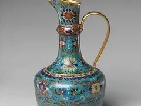
清掐丝珐琅执壶，大都会艺术博物馆藏图：大都会艺术博物馆（The Metropolitan Museum of Art） / Public Domain (Open Access, CC0) / 大都会艺术博物馆。本站已缩放裁切。 - Ⅷ-44
- Ⅷ-45
家具制作技艺
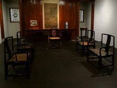
上海博物馆藏明式家具图：Gisling / CC BY 3.0 / 维基共享资源。本站已缩放裁切。 - Ⅷ-46
- Ⅷ-47
拉萨甲米水磨坊制作技艺
- 西藏自治区2006 第一批 · 新增项目官方页 →
- Ⅷ-48
兰州黄河大水车制作技艺
- 甘肃省兰州市2006 第一批 · 新增项目官方页 →
- Ⅷ-49
万安罗盘制作技艺
- 安徽省休宁县2006 第一批 · 新增项目官方页 →
- Ⅷ-50
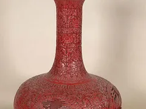
清雕漆瓶，大都会艺术博物馆藏图：大都会艺术博物馆（The Metropolitan Museum of Art） / Public Domain (Open Access, CC0) / 大都会艺术博物馆。本站已缩放裁切。 - Ⅷ-51
平遥推光漆器髹饰技艺
- 山西省平遥县2006 第一批 · 新增项目官方页 →
- Ⅷ-52
扬州漆器髹饰技艺
- 江苏省扬州市2006 第一批 · 新增项目官方页 →
- Ⅷ-53
天台山干漆夹苎技艺
- 浙江省天台县2006 第一批 · 新增项目官方页 →
- Ⅷ-54
福州脱胎漆器髹饰技艺
- 福建省福州市2006 第一批 · 新增项目官方页 →
- Ⅷ-55
厦门漆线雕技艺
- 福建省厦门市2006 第一批 · 新增项目官方页 →
- Ⅷ-56
成都漆艺
- 四川省成都市2006 第一批 · 新增项目官方页 →
- Ⅷ-57
茅台酒酿制技艺
- 贵州省2006 第一批 · 新增项目官方页 →
- Ⅷ-58
泸州老窖酒酿制技艺
- 四川省泸州市2006 第一批 · 新增项目官方页 →
- Ⅷ-59
杏花村汾酒酿制技艺
- 山西省汾阳市2006 第一批 · 新增项目官方页 →
- Ⅷ-60
绍兴黄酒酿制技艺
- 浙江省绍兴市2006 第一批 · 新增项目官方页 →